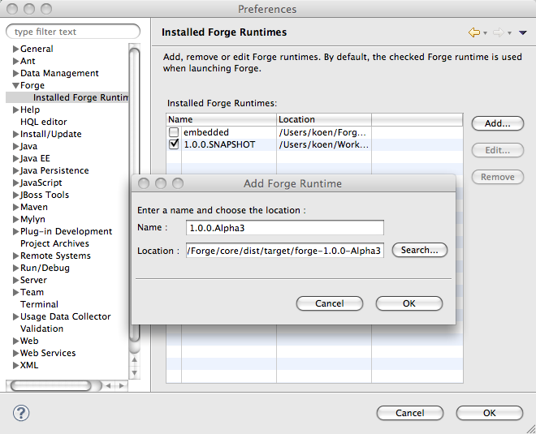
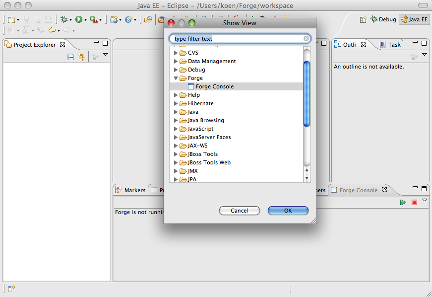
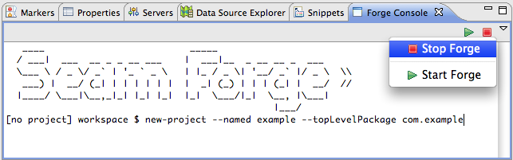
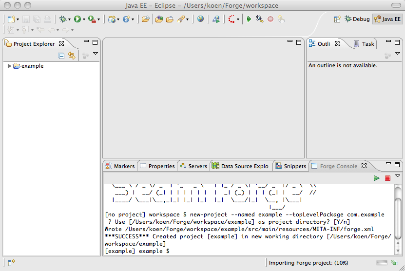
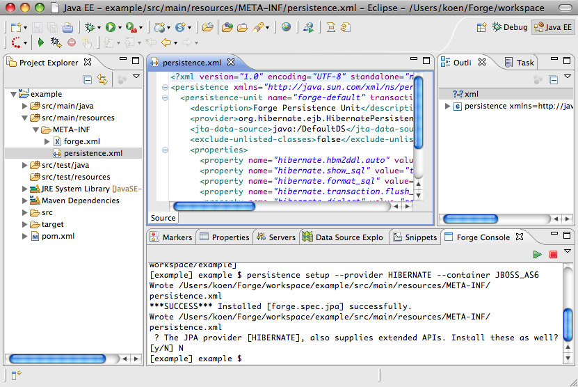
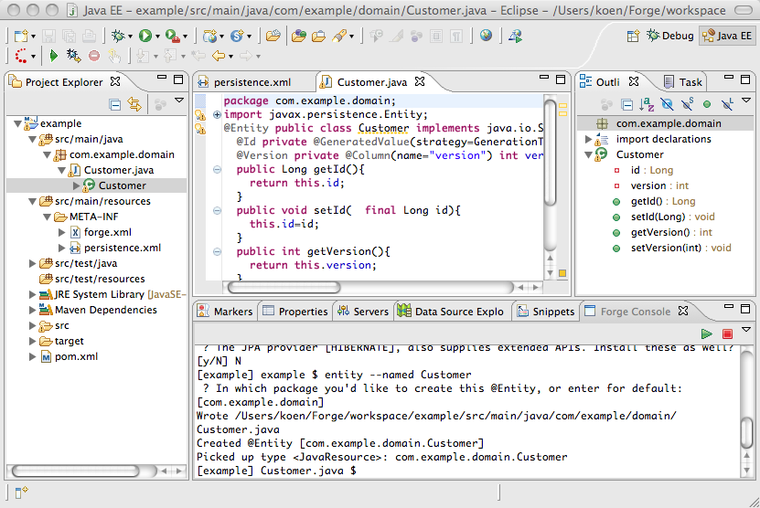
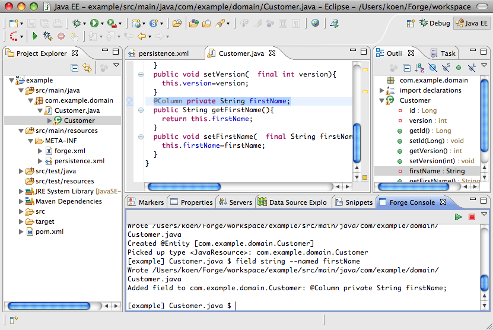

|
| Installed Forge Runtimes |
The Forge Tools come with an embedded Forge runtime. It is possible to use other Forge runtimes
by adding them and appropriately selecting them using the Installed Forge Runtimes preference page.

|
| Forge Console View |
There is a Forge Console view which you can open using the regular mechanisms to open Eclipse
views.

|
| Starting and Stopping Forge |
You can start and stop Forge by clicking the icons in the view toolbar or by using the view dropdown menu.

|
| Project Import |
Creating a project using the Forge new-project command results in an automatic import in the workspace.

|
| Persistence Setup |
Setting up persistence in a Forge project automatically opens the created peristence.xml file in
an editor.

|
| New Entity |
Creating an entity using the Forge entity command automatically opens the created Java file in the
Java editor.

|
| New Field |
Creating a new field using the Forge field command automatically selects the newly generated field
in the Java editor as well as in the Outline view.

|
| Worspace Refresh |
All the Forge commands recognized by the Forge Tools will refresh the relevant part of the
workspace if needed.
|
|